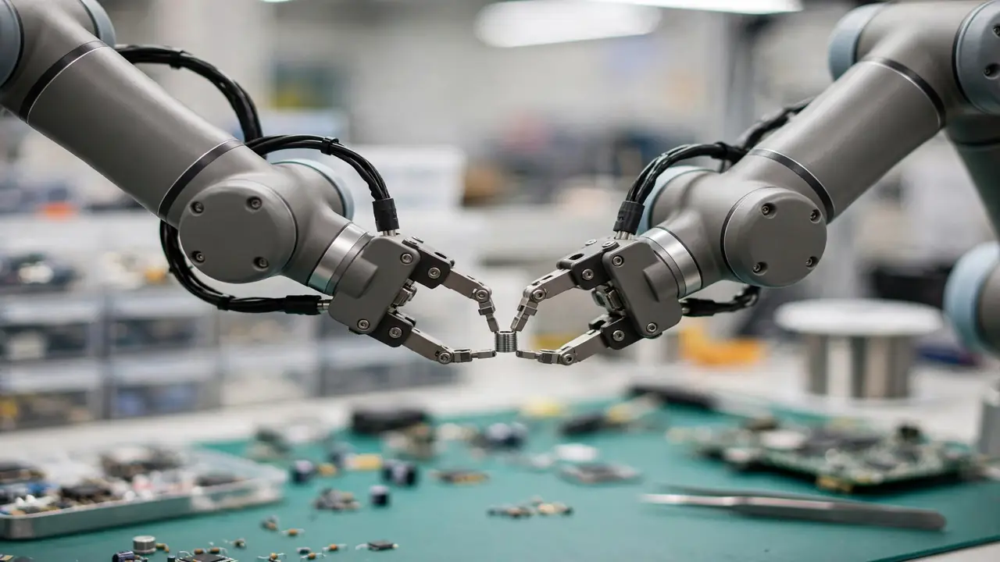

Physical Intelligence opens the Pi API beta: fine-tune robot foundation models without the GPU cluster
Physical Intelligence opened a beta of the Pi API on Tuesday, letting outside developers fine-tune and run its latest robotic foundation models through a hosted service: upload your data, train on compute the company manages, and drive your own robot through a hosted inference gateway. It is the research lab's first attempt to turn its internal training loop into a product.
The workflow: data in, robot out
The API compresses the robot-learning pipeline into three steps, as laid out in the announcement: upload your robot data, fine-tune a π model on infrastructure Physical Intelligence manages, and access the fine-tuned model through a hosted gateway to run inference. Evaluation data then guides the next iteration — collect demonstrations, train, test on the robot, use the failures to decide what data to collect next.
Access runs through a waitlist; applicants are asked to describe what they want to build. The company says the latest model available through the API already delivers more data-efficient fine-tuning and improved capability for its partners, and that because it can swap the models underpinning the API quickly, beta users will keep getting access to its newest models.

Tested in the field, not just the lab
Physical Intelligence says it built the beta to answer two questions: do its models support a broad range of applications and robotic hardware across industries, and can developers actually iterate toward useful autonomy on their own? The validation runs came from collaborations with companies deploying robots in the field.
The headline example is Actor, which deploys autonomous heavy machinery: its autonomous wheel loader scoops material and loads it into a dump truck during a real commercial deployment — without any operator inside the machine. A small number of companies got early API access to test independent iteration. Almond, which builds Axol, a dual-arm robot for physical AI builders, used the API to produce a model that deburrs spacers used in Axol's own assembly — after four days of iterating.
Most of the applications shown ran with cloud-hosted inference through the API, with deployments spanning Japan, Switzerland, and sites across the United States. The company notes the deployments also surfaced areas for improvement — including network connectivity challenges for some. That is the honest trade of the hosted model: no GPU cluster on your side, but your robot's brain lives across the internet.
What changes for robotics teams
The pitch is that general-purpose robotic foundation models — Physical Intelligence's π0 and π0.5, in this case — already reduce the data and effort needed to adapt robots to new tasks, environments, or hardware, but adapting them still demands ML infrastructure, compute, and data pipelines. The API takes that burden over: users supply the data, the company manages training compute and serves the finished model. As a baseline, the lab's open-source π models ship pre-trained on more than 10,000 hours of robot data under an Apache-2.0 license, yet need a 70 GB-plus GPU like the A100 or H100 for full fine-tuning — the exact wall the API is meant to remove.
Physical Intelligence frames the beta as its first step toward "providing the physical intelligence foundation the community can build upon" and enabling end-to-end autonomy — language that positions the API not just as developer tooling but as a data flywheel. The more developers train through it, the company argues, the more it learns where its models break, which feeds the next generation of models. It is also hiring across research, infrastructure, hardware, people, and operations.
The caveats are the ones the announcement names itself: the effort is early, network dependence is real for cloud-hosted inference, and pricing and commercial terms remain undisclosed. For teams without the compute to fine-tune vision-language-action models, though, the Pi API beta is the first public on-ramp to a model line that has until now lived almost entirely inside research labs.